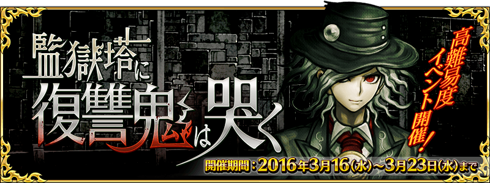
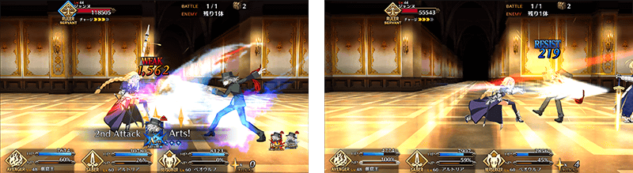
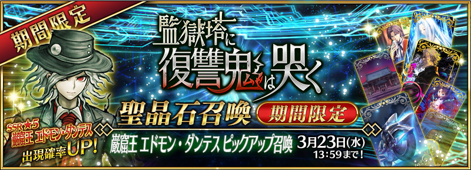
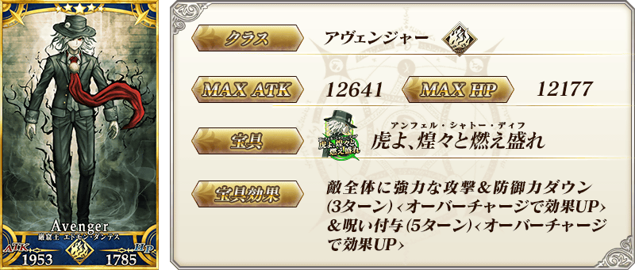
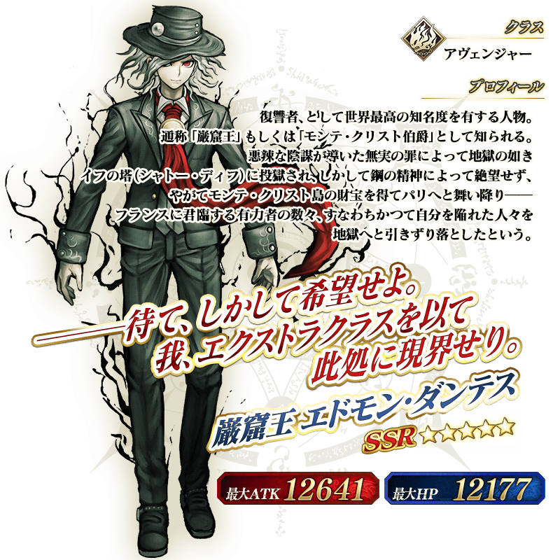

◆活動舉辦期間◆
2016年3月16日（三）15:00～3月23日（三） 12:59
◆活動概要◆
一覺醒來，熟悉的迦爾帝亞竟變成了監獄塔…！
被囚禁在夢與現實狹縫中的Master，能平安無事從監獄塔越獄嗎？
期間限定活動「監獄塔中復仇鬼慟哭」是以上級者為對象的高難易度活動。
挑戰每天開放的高難易度關卡，獲得報酬吧！
◆活動參加條件◆
只有通過「第四特異點 死界魔霧城市 倫敦」的Master才能參加
※現在「主線關卡AP消費1/2宣傳活動」正實施中。無論如何請藉此機會推進主線關卡來參加活動。

※開發中畫面。

關卡在下列時間各開放1關。
※要通過已開放關卡，下個能挑戰的關卡才會出現。
| 關卡開放時間 | 通過報酬 |
|---|---|
| 3月16日（三）15：00～ | 呼符×1 |
| 3月16日（三）23：00～ | 呼符×1 |
| 3月17日（四）23：00～ | 呼符×1 |
| 3月18日（五）23：00～ | 呼符×1 |
| 3月19日（六）23：00～ | 呼符×1 |
| 3月20日（日）23：00～ | 呼符×1 |
| 3月21日（一）23：00～ | 伝承結晶×1 |
在本活動中，初登場職階「Avenger」的Servant「★5（SSR）巖窟王 愛德蒙・唐泰斯」登場。
「Avenger」是對「Ruler」有利的職階。
對「Ruler」給予的傷害變大，從「Ruler」受到的傷害變小。

※開發中畫面。

◆「巌窟王 愛德蒙・唐泰斯Pick Up召喚」期間◆
期間：2016年3月16日（三）15:00～3月23日（三） 12:59
以期間限定舉辦「巌窟王 愛德蒙・唐泰斯Pick Up召喚」！
初登場職階「Avenger」的Servant「★5（SSR）巖窟王 愛德蒙・唐泰斯」以期間限定登場！
「★5（SSR）巖窟王 愛德蒙・唐泰斯」是小松崎類（槍彈辯駁系列）擔當角色設計。
詳情請在召喚左下的召喚詳細確認。
※巖窟王 愛德蒙・唐泰斯在「巖窟王 愛德蒙・唐泰斯Pick Up召喚」期間結束後，不會追加到故事召喚。
另外，在Pick Up期間中期間限定Servant的出現機率UP！
10次召喚★4(SR)以上1枚確定和★3(R)以上的Servant1位確定！
※★4(SR)以上確定包含Servant和概念禮裝。
※所謂「Servant出現機率UP」意指比同稀有度的Servant出現機率更高的設定。




